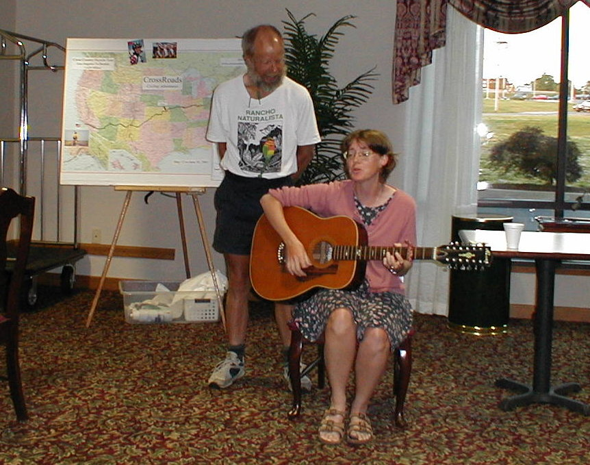

Day 35: June 16, Indianapolis, IN to Richmond, INPrevious Day - Home - Next Day Photo of the DayWoo-hoo, the camera is back! I got it working again, so things should be back to normal now with the picture of the day. Here's hoping it stays that way... Chuck and Karen performing for the group. Keegan's LogDay 35: June 16, Indianapolis, IN to Richmond, IN Mileage: 88.21 milesWeather: Sunny and warm with a gentle tailwind Vertical Climb: 1250 feet Riding Time: 5:50 Great news, my camera is alive again, so I can continue posting pictures beginning tonight! Turns out a microswitch died when I dropped the camera, I got a soldering iron at Lowe's across the street and used it to remove the switch and put a jumper in place. Seems to work fine now, I just need to be a little more careful... This morning I woke up in my own bed, I wanted to stay there for at least a few more hours, but the time to leave was approaching all too quickly. I got ready and finished packing my bags, I decided to have breakfast at home before leaving for the hotel to rejoin the group. Mom took our luggage to the hotel for us, we met up and had about 15 minutes to say goodbye before it was time to roll. The route out of town followed 86th street across the north side, usually a busy thoroughfare but not too bad on a Saturday morning. I got my daily flat just before the David Wolfe bridge about 10 miles into the ride, another puncture flat, bringing my total to 11 so far. We followed 86/82nd as it turned to a country road on the east side, then followed a lot of small roads on the way to New Castle. Dad missed a turn along a hilly road, but the round trip only added an extra mile to the total. I stopped to top off the air in my tires at a sag van when I noticed that I had a broken spoke on the rear wheel, it was still rideable so I continued on. The weather was perfect today, the skies were sunny all day long and the temperatures only reached the mid-80s. The winds were almost non-existent in the morning, but in the afternoon we had a light tailwind helping to push us along. Tomorrow is supposed to be about the same, we'll be glad as long as this weather stays with us. We reached the sag at about 11:00, Pat looked at my wheel and told me it would be fine to get me to the hotel, but I should stop at the bike shop and get some new spokes. We didn't stay too long, though we weren't in a big hurry to get to the hotel. We stopped in Hagerstown at the Subway for lunch, mom and I had stopped at the same restaurant years before on a TRIRI. We cruised into Richmond from there, stopping to take a picture in front of the Wayne County Courthouse and find our way back to the route. The bike shop was closed, so we rode straight to the hotel from Richmond. I sat down to work on my camera when we got back, you already know the rest of the story. Route rap was eventful, Larry return to the tour after a few weeks of absence, and since today was Diane and Larry's 45th wedding anniversary, the group held a second wedding for the couple. We headed to Bob Evan's for dinner, I can't say the food was very good but we did eat a lot of it. After dinner I finished reassembling my camera, then took my bike down to Pat. Luckily he had a spoke of the right length, so I got a new spoke and a true wheel. Karen and Chuck had a short concert before bedtime, I got a chance to use my camera. Karen played quite a few songs, about 25 riders showed up to listen to her play. Tomorrow is Father's Day, dad and I decided to celebrate with a century ride to Marysville, OH. We have a little more climbing tomorrow too, but the weather should be great, a perfect day for a bike ride. Phil's LogCrawfordsville was an interesting evening with a distant thunderstorm, just flashes of light to the west. It foretold an approaching storm which I expected overnight. Unfortunately I was wrong. The ride into Indianapolis was REALLY pretty. Tracy had somehow picked some really pretty roads into the city, winding us through pretty rural areas, some with the smoothest roads anywhere. And she had arranged a sag stop at the Gentry dairy farm just inside the Hendricks county line. The story is that years ago, Tracy knocked on their door and asked if she could have a sag stop in their driveway. In Hoosier Hospitality spirit, the Gentrys now put out all their outdoor furniture for us, join us, and encourage tours of their farm. Many photos were taken of the "baby cows" and many were watching a very expectant cow for a brand new calf. It was not to happen on our watch. I thanked the Gentrys profusely for all the citizens of the state. Indiana looked SO good. On the continued route into Indy, I had a heck of a scare. The pavement edge was steep, and in an inattentive moment I drifted off into the rough. There was a sharp drop and I was into loose gravelly stuff. I found myself fishtailing and at one point I was sure that I was going down. But God was good and diverted me way off to the right, up a knoll (which cut my speed), and i held on to the rear brake trying to bring the adventure to an end. Phew, I stopped and was still upright, the only damage being a lot of local flora in my rear derailleur. It's still there. Shortly after that, while I was still pretty shaken, Sue and Lauren were waiting for us at an intersection in Brownsburg. hey joined the peloton, none had met Lauren before. We all stopped at the intersection of about 80th Street and Lafayette Road, where Sue and Lauren were splitting off to go home. I told the others that they were only four miles from the hotel there, but we had 22+ miles to ride. We took off southbound. Next stop was the Indianapolis 500 Motor Speedway. As we pulled in, the Yellow Shirts directed us to the motorcycle lot, and we watched as the skies from the west turned from dark to night. All headed for the snack bar as the first huge drops fell, and all of us, very hot and sweaty, went into the over chilled restaurant. A hamburger and Coke for $6 later we were on a bench outside, under an overhang, watching a spring Indiana rainstorm pass through. It was invigorating, and the Yellow Shirts finally let us ride a lap on the track despite lingering rain. Keegan and I had done this many times, but it was new and exciting for all. Next stop was the Velodrome, but we were unable to get there because roads were closed for a bicycle race in association with the police and fire games in town. We were also course then, and I had to lead the group past Dave Bacon's house to get back on course. We made the hotel and Keegan and I peeled off for Zionsville. (and he had a flat one mile further, his 10th.) Today, Saturday, we were back early to the hotel and to breakfast with the group. We rode east out of town on 86th street, Keegan flatted again on the old truss bridge near Barnes & Noble. The day was perfect. Skies were cool blue after the cold front passage, and the temps were most pleasant. We crossed the eastern half of the state on State Road 38, through New Castle and Hagerstown, where we stopped at a Subway for lunch. I was deeply proud of Indiana for putting on such a fine day, and the state was green with the fresh rain and the farms all looked so picturesque. II told everyone at lunch the the weather was always this perfect, but not to let it out. We didn't want to get the crowds like California! We rolled into Richmond where apparently some of the street names had been changed, but everyone found their way to the motel. Before dinner, in honor of Diane and Larry's 45th wedding anniversary, the girls in the group put on a mock re-wedding with procession and the whole thing. Chuck wrote the vows which were a bit unconventional, Karen provided the music. This group has fun together, to say the least. After dinner, Karen did a concert on her guitar. She sang Wonderful World (Louis Armstrong, not Herman's Hermits version), Piano Man, and Give Yourself to Love, and others. Chuck did a silly song with her where we were all barnyard animals. We all found ourselves between rolling with laughter and tears at the pretty singing. We distributed Chuck's books too, which he signed. This group has fun together. Consider doing it next year. Visit www.crossroadscycling.com. Train a little, learn to fix flats, and enjoy. WE sure are. |
{kind=link}